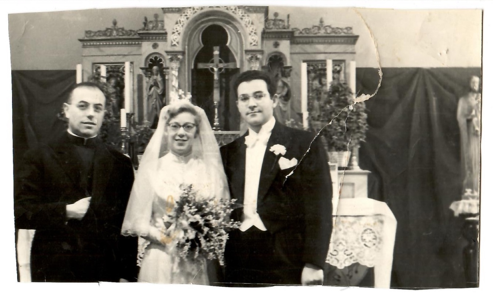
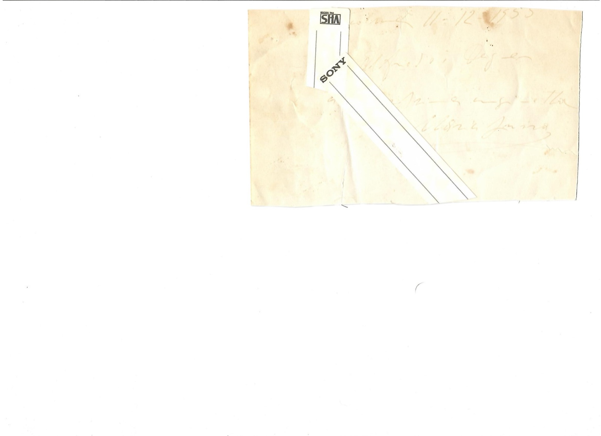

Matrimonio 1955
Foglio 1 di 2

Nessun testo sul fronte (fotografia).
Foglio 2 di 2

[retro] Scritta a mano molto sbiadita, coperta da etichette VHS/SONY: «[…] 11-12-1955 / Alfredo e Dagmar [?] / […]».
Documentazione digitale
Documentazione e codifica dell'ITEM: